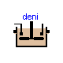
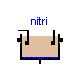
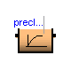
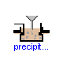
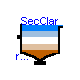
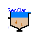
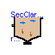
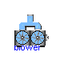
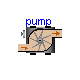
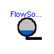
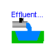
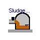
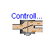
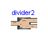
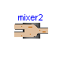
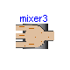
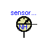
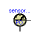
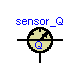
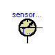
 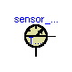
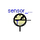
This package is part of the WasteWater Library and contains definitions for the graphical layout of components which are used within the sub-libraries ASM1, ASM2d and ASM3.
Main Author: Gerald Reichl Technische Universitaet Ilmenau Faculty of Informatics and Automation Department Dynamics and Simulation of ecological Systems P.O. Box 10 05 65 98684 Ilmenau Germany email: gerald.reichl@tu-ilmenau.de Copyright (C) 2003, Gerald Reichl
The Modelica package is free software; it can be redistributed and/or modified under the terms of the Modelica license, see the license conditions and the accompanying disclaimer in the documentation of package Modelica in file "Modelica/package.mo".
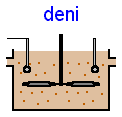
Icon for a denitrification tank
partial block deni "Icon for a denitrification tank" end deni;
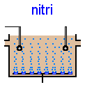
Icon for a nitrification tank
partial model nitri "Icon for a nitrification tank" end nitri;
Icon for a secondary clarifier
partial model SecClar "Icon for a secondary clarifier" end SecClar;
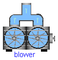
Icon for an air blower
partial model blower "Icon for an air blower" end blower;
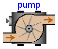
Icon for a wastewater pump
partial model pump "Icon for a wastewater pump" end pump;
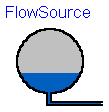
Icon for a flow source
partial model FlowSource "Icon for a flow source" end FlowSource;

Icon for a wastewater source
partial model WWSource "Icon for a wastewater source" end WWSource;
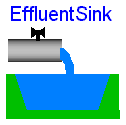
Icon for a water sink e.g. receiving water
partial model EffluentSink "Icon for a water sink e.g. receiving water" end EffluentSink;
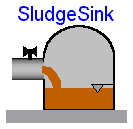
Icon for a wastewater sink
partial model SludgeSink "Icon for a wastewater sink" end SludgeSink;
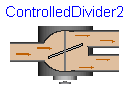
Icon for a controlled divider into 2 flows
partial model ControlledDivider2 "Icon for a controlled divider into 2 flows" end ControlledDivider2;
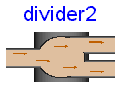
Icon for a flow divider into 2 flows
partial model divider2 "Icon for a flow divider into 2 flows" end divider2;
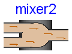
Icon for a mixer of 2 flows
partial model mixer2 "Icon for a mixer of 2 flows" end mixer2;
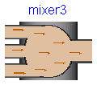
Icon for a mixer of 3 flows
partial model mixer3 "Icon for a mixer of 3 flows" end mixer3;
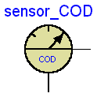
Icon for a chemical oxygen demand sensor
partial model sensor_COD "Icon for a chemical oxygen demand sensor" end sensor_COD;

Icon for an ammonium nitrogen sensor.
partial model sensor_NH "Icon for an ammonium nitrogen sensor" end sensor_NH;
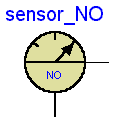
Icon for a nitrate nitrogen sensor.
partial model sensor_NO "Icon for a nitrate nitrogen sensor" end sensor_NO;
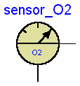
Icon for an oxygen sensor.
partial model sensor_O2 "Icon for an oxygen sensor" end sensor_O2;

Icon for a flow sensor
partial model sensor_Q "Icon for a flow sensor" end sensor_Q;
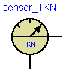
Icon for a Kjeldal nitrogen and total nitrogen sensor.
partial model sensor_TKN "Icon for a Kjeldal nitrogen and total nitrogen sensor" end sensor_TKN;
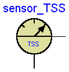
Icon for a total suspended solids sensor.
partial model sensor_TSS "Icon for a total suspended solids sensor" end sensor_TSS;
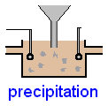
Icon for a precipitation tank
partial model precipitation "Icon for a precipitation tank" end precipitation;
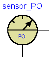
Icon for a phosphate sensor
partial model sensor_PO "Icon for a phosphate sensor" end sensor_PO;
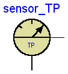
Icon for a total phosphorus sensor
partial model sensor_TP "Icon for a total phosphorus sensor" end sensor_TP;

Icon for a dynamic preclarifier tank
partial model preclar1 "Icon for a dynamic preclarifier tank" end preclar1;
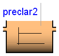
Icon for a static preclarifier tank
partial model preclar2 "Icon for a static preclarifier tank" end preclar2;
Icon for a secondary clarifier
partial model SecClarKrebs "Icon for a secondary clarifier based on Krebs model" end SecClarKrebs;
Icon for a secondary clarifier
partial model SecClarSimple "Icon for a secondary clarifier based on simple model" end SecClarSimple;